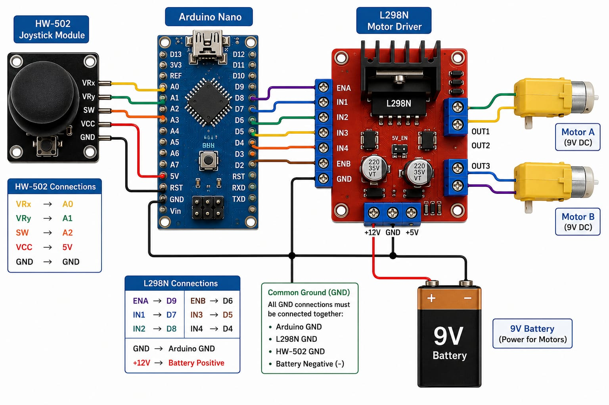
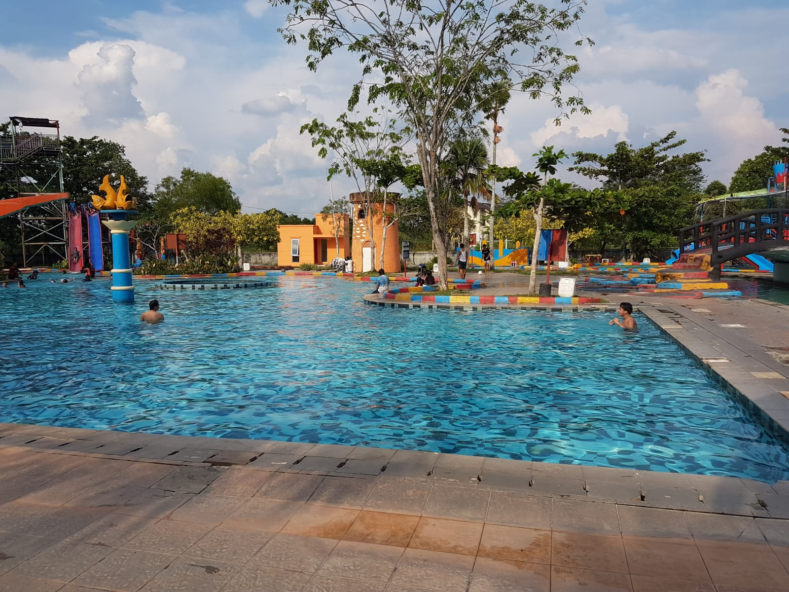
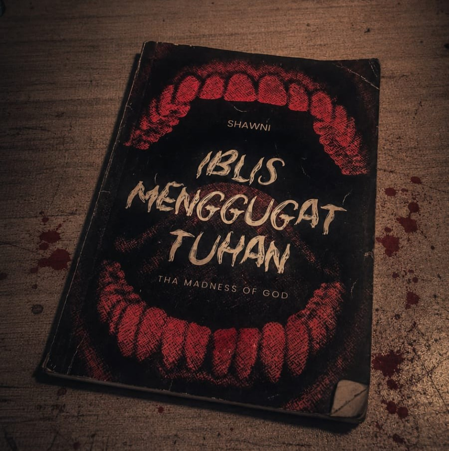
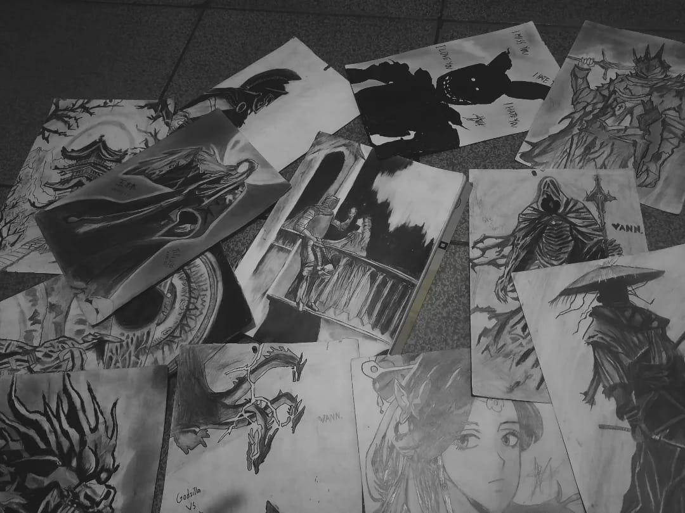
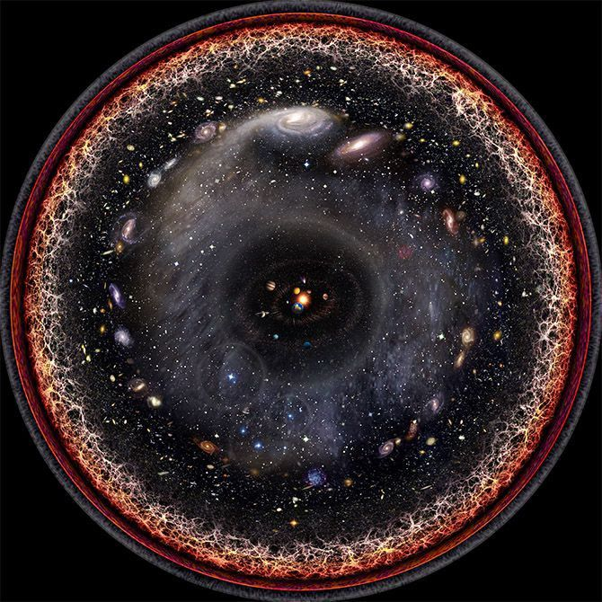

Technology
Devices, software, interfaces, and the way small systems can turn into something useful.
Ordinary Person:
Few worlds i like to explore, few things i like to make, and a few projects i like to share.
I like technology, calm learning, visual details, good stories, and ideas that make the world feel wider. This website is not a trophy case. It is closer to a waste of time.
These are not meant to sound grand. They are just topics that often catch my attention and make ordinary days feel less flat.
Devices, software, interfaces, and the way small systems can turn into something useful.
Metaphysics, ethics, epistemology, and the habit of asking "why" a few more times. Nah, just kidding. Much more than that, actually.
I love how astronomy makes our life feel small and meaningless to the universe.
A simple habit of asking a little more, reading a little further, and not pretending to know everything.
They do not need to connect to one big theme. I just like them, and that is enough.

Exploring devices, software, and new digital ideas.

A calm way to relax and forget about problems.

Discovering new minds and perspectives through books.

Practicing imagination, and one way to lost in time.

Oh, how i love the mystery of everything in the universe!
Cosmic note
Astronomy adds a quiet layer to this website: Earth, a small moon, and a field of stars moving slowly behind the introduction.
I know that I know nothing.
A reminder to stay grounded, keep learning, and leave enough room for the unknown.